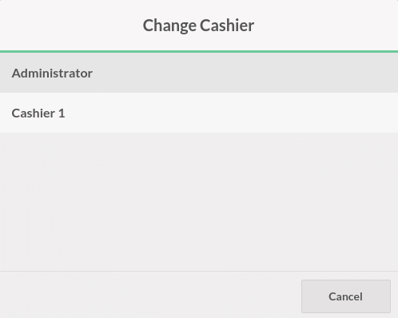
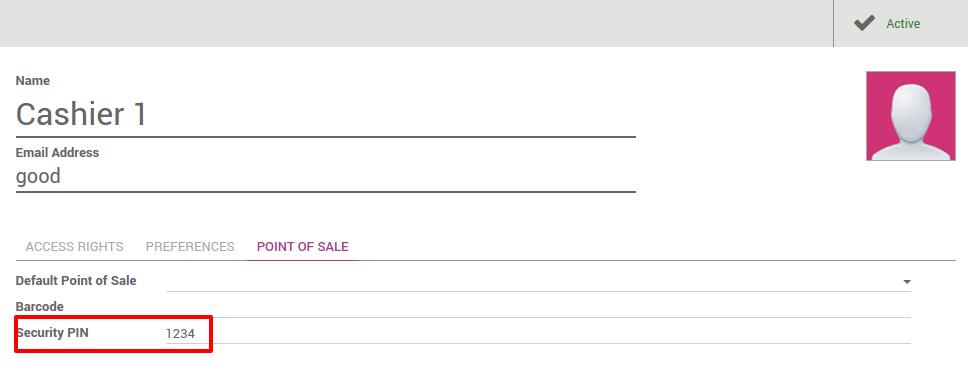
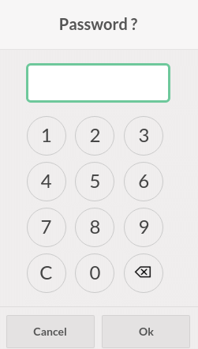
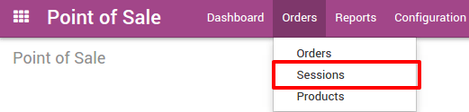
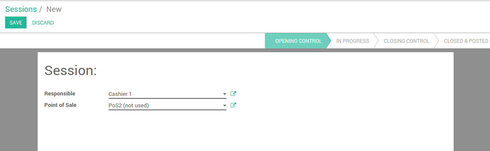

This tutorial will describe how to manage multiple cashiers. There are four differents ways to manage several cashiers.
Switch cashier without any security
As prerequisite, you just need to have a second user with the Point of Sale User rights (Under the menu). On the Dashboard click on New Session as the main user.

On the top of the screen click on the user name.

And switch to another cashier.
The name on the top has changed which means you have changed the cashier.

Switch cashier with pin code
Configuration
If you want your cashiers to need a pin code to be able to use it, you can set it up in by clicking on Settings.

Then click on Manage access rights.

Edit the cashier and add a security pin code on the Point of Sale tab.
Change cashier
On the Dashboard click on New Session.

On the top of the screen click on the user name.

Choose your cashier:

You will have to insert the user's pin code to be able to continue.
Now you can see that the cashier has changed.

Switch cashier with cashier barcode badge
Configuration
If you want your cashiers to scan its badge, you can set it up in by clicking on Settings.

Then click on Manage access rights

Edit the cashier and add a security pin code on the Point of Sale tab.

Tip
Be careful of the barcode nomenclature, the default one forced you
to use a barcode starting with 041 for cashier barcodes. To change that
go to .

Change Cashier
On the Dashboard click on New Session.

On the top of the screen click on the user name.

When the cashier scans his own badge, you can see on the top that the cashier has changed.
Assign session to a user
Click on the menu .
Then, click on New and assign as Responsible the correct cashier to the point of sale.
When the cashier logs in he is able to open the session

Assign a default point of sale to a cashier
If you want your cashiers to be assigned to a point of sale, go to .
Then click on Manage Access Rights.

Edit the cashier and add a Default Point of Sale under the Point of Sale tab.